Timeline
A simple, readable timeline. Add events in chronological order; keep each entry short.
April 4, 1902
The Rhode Island State Legislature passed the 10-hour law for streetcar employees.
On April 4, 1902 the General Assembly passed a law: “An Act to Regulate the Hours of Labor of Certain Employees of Street Railway Corporations." This law required employers of “street railway corporations” to limit workdays to “10 hours actual work a day.” The law was to take effect on June 1, 1902.
May 31, 1902
The Union Traction and Electric Company posted bulletins in work spaces declaring that they will not abide by the 10-hour law.
On May 31, the streetcar employees throughout Rhode Island went to work. Upon arriving at their respective carbarns, they came across bulletins posted by management. This bulletin announced that “All conductors, motormen and gripmen who wish to continue work under their existing contracts are free to do so; and those who wish to reduce their time to 10 hours per day, with proportionate reduction of pay, are equally free to make that choice.” The bulletin went further, arguing that the law itself was “unconstitutional” since it inhibited the free will of streetcar workers who wanted to work over that amount..
The language of the law stipulated that in extraneous circumstances, “extra labor may be performed for extra compensation.” The company’s bulletin was a challenge to the authority of the General Assembly. Nationally, there was precedence. Legislation of this sort had been passed in other states, including Massachusetts, New York, and New Jersey.
The language of the law stipulated that in extraneous circumstances, “extra labor may be performed for extra compensation.” The company’s bulletin was a challenge to the authority of the General Assembly. Nationally, there was precedence. Legislation of this sort had been passed in other states, including Massachusetts, New York, and New Jersey.
June 1, 1902
The 10-hour law for streetcar employees goes into effect.
The law goes into effect while the Union Railroad Company refuses to abide by its intent. John
Arno, President of Division 200 of the streetcar workers’ union posted a notice to union members in all the car barns.
The Business Agent, Legal Counsel, and President of the Union all argue that the Company is in violation of the law.
The Business Agent, Legal Counsel, and President of the Union all argue that the Company is in violation of the law.
June 3, 1902
Division 200 of the Amalgamated Association of Street Railway Employes of America sent an ultimatum to the United Traction Company.
Leaders of Division 200 had been meeting since the Company refused to abide by the 10-hour law. On June 3, they sent an ultimatum to their employer including the following stipulations:
1. Wages increased to $0.22½ cents/hour at the new 10-hour maximum.
2. Those making more the $2.25/day will continue to receive their higher wage.
3. New employees be hired at $0.20/hour until they work enough to receive $0.25/hour.
4. All other employees other than conductors, motormen, and gripmen should receive a day’s wage with a maximum of 9 hours of work.
5. Those working above the maximum 10 hours should be paid $0.25/hour.
The United Traction Company responded to the ultimatum by rejecting it outright.
1. Wages increased to $0.22½ cents/hour at the new 10-hour maximum.
2. Those making more the $2.25/day will continue to receive their higher wage.
3. New employees be hired at $0.20/hour until they work enough to receive $0.25/hour.
4. All other employees other than conductors, motormen, and gripmen should receive a day’s wage with a maximum of 9 hours of work.
5. Those working above the maximum 10 hours should be paid $0.25/hour.
The United Traction Company responded to the ultimatum by rejecting it outright.
June 4, 1902
Union workers throughout Rhode Island begin strike at midnight June 4.

At midnight on June 4, Division 200 began their strike. Workers did not show up to work to begin the streetcar service later that morning.
Many employees, both union members and non-union members participated. In Providence, the strike was partially successful; it was reported that two thirds of the cars continued to run, and many workers did not strike. In Pawtucket, the Pawtucket Street Railway Company had 125 employees—only 4 of them showed up to work, and 2 out of the normal 32 cars were in service.
While Providence struggled to implement a fully organized strike, Pawtucket traffic was brought to a standstill: “Such a complete tie-up came as quite a surprise in Pawtucket, as it was believed that the men were not so thoroughly organized.” Mill workers throughout the city were forced to walk from their homes. Support within the city was overwhelming. In the evening “one would imagine the stores were open, so great were the crowds on the streets.” They gathered downtown, near Main St. Square, parading around the town with a banner reading “Our friends will not ride in the cars.” Strikers erected a large banner in Main St. square: “Electric car strike is on. Friends of the men will not ride in the cars.”
The Pawtucket Street Railway Company requested officers protect the carbarn in case of disorder or vandalism. Mayor Fitzgerald ordered the police away from the car barn—this order sparked a small controversy between the Company and the mayor as to whether he was properly using his power to protect private property. In response to criticism, Fitzgerald remarked on the company’s hypocrisy: “It certainly would be a parody of justice for the police department, the body empowered in this city to protect citizens and uphold the laws, to be prostituted to the service of a lawbreaker, a position in which the railway company stands at the present time, having refused to obey a state law.” Fitzgerald's “lawbreaking” referred to the railway company and its rejection of the 10-hour law.
While Providence struggled to implement a fully organized strike, Pawtucket traffic was brought to a standstill: “Such a complete tie-up came as quite a surprise in Pawtucket, as it was believed that the men were not so thoroughly organized.” Mill workers throughout the city were forced to walk from their homes. Support within the city was overwhelming. In the evening “one would imagine the stores were open, so great were the crowds on the streets.” They gathered downtown, near Main St. Square, parading around the town with a banner reading “Our friends will not ride in the cars.” Strikers erected a large banner in Main St. square: “Electric car strike is on. Friends of the men will not ride in the cars.”
The Pawtucket Street Railway Company requested officers protect the carbarn in case of disorder or vandalism. Mayor Fitzgerald ordered the police away from the car barn—this order sparked a small controversy between the Company and the mayor as to whether he was properly using his power to protect private property. In response to criticism, Fitzgerald remarked on the company’s hypocrisy: “It certainly would be a parody of justice for the police department, the body empowered in this city to protect citizens and uphold the laws, to be prostituted to the service of a lawbreaker, a position in which the railway company stands at the present time, having refused to obey a state law.” Fitzgerald's “lawbreaking” referred to the railway company and its rejection of the 10-hour law.
June 5, 1902
Large demonstrations held in Providence and Pawtucket.

The leaders of the Pawtucket Union leaders set up headquarters on Main St.
Throughout the day residents of Pawtucket harassed those workers who had not joined the strike. They committed various acts of property damage and petty violence.
Superintendent Raymond R. Smith of the Pawtucket Street Railway Company was the victim of “cabbages and decayed fruit” on the Broadway line. The company’s office on the corner of Broadway and Main streets was mobbed so heavily that “the pressure against the plate glass window of the office was such that Superintendent Smith believed that it would be broken.”
Residents harassed carmen by tossing food and stones at the cars and carmen, damaging property and injuring workers. They damaged the tracks and placed obstacles, such as carts, logs, boulders on them to inhibit trolleys from passing. On Pawtucket Avenue, a car lost power and was mobbed by 500 people who “jostled” the workers. According to The Providence Journal, only one policeman was on duty. On Broadway, children dragged a wagon onto the tracks, and a big crowd gathered. A conductor fired a revolver in the air to “frighten the mob.” Later that evening, there was a physical fight on High and Main St. Omnibusses, large cars drawn by horses, were subsidized by local merchants and utilized by the strikers to boycott the trolley cars.
Union leaders issued a letter addressed “To the Public” explaining that they wish to conduct their strike “on orderly and gentlemanly lines.” They requested that the public "avoid reveling and all disorderly conduct.”
In response to the incident with the revolver, Pawtucket’s mayor John Fitzgerald sent a letter to the chief of police that “you are hereby directed to notify the street railway officials that they will not be allowed to arm their employers and you are instructed to specially see that said employees are not armed.” The Pawtucket Company requested that more police officers be assigned to the carbarns, but Fitzgerald declined the request, arguing that “providing such would irritate the people and invite riotous proceedings.”
Late in the afternoon and into the evening, downtown Pawtucket was "swarming with the strikers and their friends…. The stores were all open, and this added to the size of the crowd.” There were no serious incidents of violence, and the omnibuses provided by the strikers were able to cart people around. Many omnibuses throughout the day lingered on the tracks to inhibit the trolleys from continuing their routes.”
The Pawtucket Street Railway Company requested officers protect the carbarn in case of disorder or vandalism. Mayor Fitzgerald ordered the police away from the car barn—this order sparked a small controversy between the Company and the mayor as to whether he was properly using his power to protect private property. In response to criticism, Fitzgerald remarked on the company’s hypocrisy: “It certainly would be a parody of justice for the police department, the body empowered in this city to protect citizens and uphold the laws, to be prostituted to the service of a lawbreaker, a position in which the railway company stands at the present time, having refused to obey a state law.” Fitzgerald's “lawbreaking” referred to the railway company and its rejection of the 10-hour law.
Superintendent Raymond R. Smith of the Pawtucket Street Railway Company was the victim of “cabbages and decayed fruit” on the Broadway line. The company’s office on the corner of Broadway and Main streets was mobbed so heavily that “the pressure against the plate glass window of the office was such that Superintendent Smith believed that it would be broken.”
Residents harassed carmen by tossing food and stones at the cars and carmen, damaging property and injuring workers. They damaged the tracks and placed obstacles, such as carts, logs, boulders on them to inhibit trolleys from passing. On Pawtucket Avenue, a car lost power and was mobbed by 500 people who “jostled” the workers. According to The Providence Journal, only one policeman was on duty. On Broadway, children dragged a wagon onto the tracks, and a big crowd gathered. A conductor fired a revolver in the air to “frighten the mob.” Later that evening, there was a physical fight on High and Main St. Omnibusses, large cars drawn by horses, were subsidized by local merchants and utilized by the strikers to boycott the trolley cars.
Union leaders issued a letter addressed “To the Public” explaining that they wish to conduct their strike “on orderly and gentlemanly lines.” They requested that the public "avoid reveling and all disorderly conduct.”
In response to the incident with the revolver, Pawtucket’s mayor John Fitzgerald sent a letter to the chief of police that “you are hereby directed to notify the street railway officials that they will not be allowed to arm their employers and you are instructed to specially see that said employees are not armed.” The Pawtucket Company requested that more police officers be assigned to the carbarns, but Fitzgerald declined the request, arguing that “providing such would irritate the people and invite riotous proceedings.”
Late in the afternoon and into the evening, downtown Pawtucket was "swarming with the strikers and their friends…. The stores were all open, and this added to the size of the crowd.” There were no serious incidents of violence, and the omnibuses provided by the strikers were able to cart people around. Many omnibuses throughout the day lingered on the tracks to inhibit the trolleys from continuing their routes.”
The Pawtucket Street Railway Company requested officers protect the carbarn in case of disorder or vandalism. Mayor Fitzgerald ordered the police away from the car barn—this order sparked a small controversy between the Company and the mayor as to whether he was properly using his power to protect private property. In response to criticism, Fitzgerald remarked on the company’s hypocrisy: “It certainly would be a parody of justice for the police department, the body empowered in this city to protect citizens and uphold the laws, to be prostituted to the service of a lawbreaker, a position in which the railway company stands at the present time, having refused to obey a state law.” Fitzgerald's “lawbreaking” referred to the railway company and its rejection of the 10-hour law.
June 6, 1902
Deputy Sheriffs on cars—disorder continues—strikers host parade through Pawtucket and Central Falls.
On the morning of June 6, the Sheriff of Providence County assigned deputies to ride the streetcars and protect Company’s property. Superintendent Smith felt that Mayor Fitzgerald was not doing enough in his position to prevent damage to property and intimidation of the remaining workers.
Mayor Fitzgerald issued a proclamation urging residents to “be careful not to interfere with the property of the street railway company or their employees.” A.T. Potter, the General Manager of the United Traction Company criticized the mayor and his handling of the situation Fitzgerald’s proclamation was a response to Potter, as much as it was a call for civility. Fitzgerald pushed back: “Our police force is not at the beck and call of any man, men or corporations, who feel they are entitled to special escort service, nor is it large enough to spare men for ornamental purposes on street cars.” Fitzgerald claimed his police chief had the situation under control, and deputies were not needed.
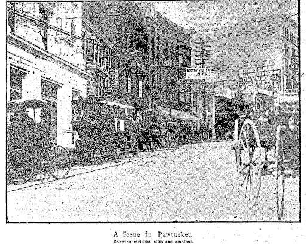
A banner on Main Street was raised in Pawtucket reading “Electric Car Strike Is On.” At the corner of Pawtucket and East Avenues, supporters raised a man hanging in effigy with a sign reading “This is the man who ran the last car.”
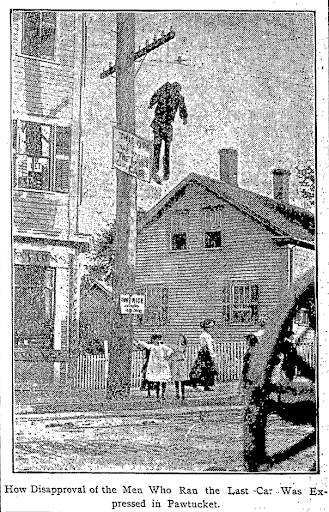
Throughout the city, residents obstructed the tracks of the streetcar lines in various ways. A teamster with an omnibus drove in front of a streetcar on Cottage Street and Broadway, until it stopped in front of a saloon not allowing the streetcar to pass. One of the deputy sheriffs tried to move the car from the tracks by leading the horses away. On Prospect street, a driver stopped on the tracks and a car was held up for 15 minutes. Residents continued to place boulders, logs and other obstructions on the tracks throughout the day.
That evening, the strike leaders organized a parade to illustrate the strength of their support. Hundreds of Union members from Providence took the train to join their Pawtucket brethren. The parade began about 7:15 PM. The Evening Times of Pawtucket described the parade a “grand local celebration” where “thousands were on the street, laughing, frollicking and talking over the situations.” The Providence Journal remarked that “no such an assemblage ever gathered in that city before,” estimating about 450 men in the parade. The parade seemed to gather more supporters throughout its multi-city march; The Evening Times claimed when the parade ended that about “1,200 men were in line.” The parade was well-organized and represented the swell of support the strikers had within the community. “Lawyers, doctors, business men, clerks and mechanics were out in full force and it was an easy matter for the most casual observer to tell which way public sentiment was veering. Women and children were out in large numbers and took a great interest in what was taking place, while the boy with his tin horn helped to add to the general holiday appearance of things.”
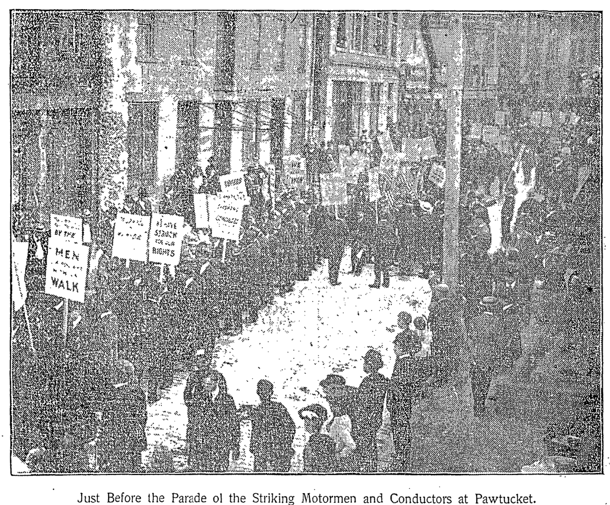
The strikers held a large American flag at the front, and exhibited placards with a variety of slogans: “Ten Hours is Long Enough;” “Men, if You are With Us, Walk;” “If the Workingman Breaks the Law He is Arrested, ‘Tis Different with the Railroad Company.” An array of speakers addressed the crowd following the parade. The first speaker was Rezin Orr, the Treasurer of the Amalgamated Association of Street Railway Employees of America (the national organization in which the local chapter was RI’s Division 200), who had arrived from Detroit on June 4. The second speaker was Pawtucket State Senator Joseph Banigan. The third was Henry E. Tiepke, the previous mayor and current attorney for the local union. Click here to see their speeches.
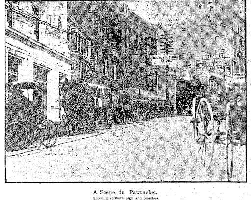
A banner on Main Street was raised in Pawtucket reading “Electric Car Strike Is On.” At the corner of Pawtucket and East Avenues, supporters raised a man hanging in effigy with a sign reading “This is the man who ran the last car.”
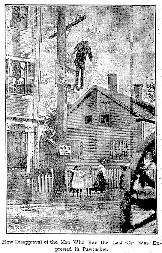
Throughout the city, residents obstructed the tracks of the streetcar lines in various ways. A teamster with an omnibus drove in front of a streetcar on Cottage Street and Broadway, until it stopped in front of a saloon not allowing the streetcar to pass. One of the deputy sheriffs tried to move the car from the tracks by leading the horses away. On Prospect street, a driver stopped on the tracks and a car was held up for 15 minutes. Residents continued to place boulders, logs and other obstructions on the tracks throughout the day.
That evening, the strike leaders organized a parade to illustrate the strength of their support. Hundreds of Union members from Providence took the train to join their Pawtucket brethren. The parade began about 7:15 PM. The Evening Times of Pawtucket described the parade a “grand local celebration” where “thousands were on the street, laughing, frollicking and talking over the situations.” The Providence Journal remarked that “no such an assemblage ever gathered in that city before,” estimating about 450 men in the parade. The parade seemed to gather more supporters throughout its multi-city march; The Evening Times claimed when the parade ended that about “1,200 men were in line.” The parade was well-organized and represented the swell of support the strikers had within the community. “Lawyers, doctors, business men, clerks and mechanics were out in full force and it was an easy matter for the most casual observer to tell which way public sentiment was veering. Women and children were out in large numbers and took a great interest in what was taking place, while the boy with his tin horn helped to add to the general holiday appearance of things.”
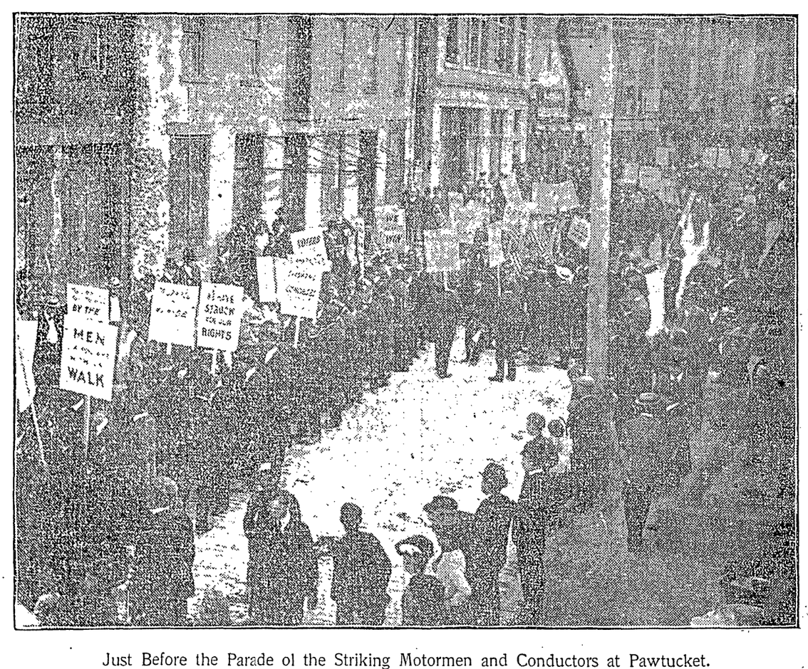
The strikers held a large American flag at the front, and exhibited placards with a variety of slogans: “Ten Hours is Long Enough;” “Men, if You are With Us, Walk;” “If the Workingman Breaks the Law He is Arrested, ‘Tis Different with the Railroad Company.” An array of speakers addressed the crowd following the parade. The first speaker was Rezin Orr, the Treasurer of the Amalgamated Association of Street Railway Employees of America (the national organization in which the local chapter was RI’s Division 200), who had arrived from Detroit on June 4. The second speaker was Pawtucket State Senator Joseph Banigan. The third was Henry E. Tiepke, the previous mayor and current attorney for the local union. Click here to see their speeches.
June 7, 1902
More disturbances in Pawtucket—arrests made—Pawtucket City Council passes resolutions and Mayor appoints special officers.
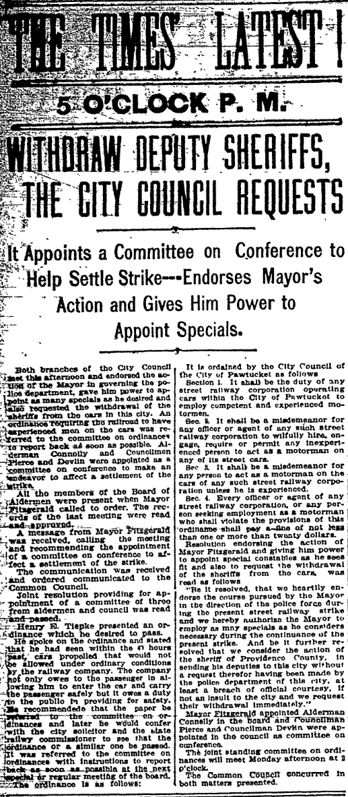
Deputy sheriffs arrested 5 individuals throughout the day for obstruction and revelling. The Providence Journal reported that throngs of people were roaming around downtown, “during the afternoon and early evening crowds congregated in the street near the office and took particular delight in enthusiastically cheering the strikers’ conveyances as they passed by.”
In the afternoon, the city council held passed a resolution:
“Be it resolved,… we hereby authorized the Mayor to employ as mny (sic) specials as he considers necessary during the continuance of the present strike. And be it further resolved that we consider the action of the sheriff of Providence county, in sending his deputies to this city without a request therefore having been made by the police department of this city, at least a breach of official courtesy, if not an insult to the city and we request their withdrawal immediately.”
The city council also passed an ordinance ensuring that all employees hired by the Company required experience. The city sided with the union in protecting the safety of the public. The Company was hiring strike breakers which were inexperienced. This ordinance was to highlight safety concerns from the community.
In the afternoon, the city council held passed a resolution:
“Be it resolved,… we hereby authorized the Mayor to employ as mny (sic) specials as he considers necessary during the continuance of the present strike. And be it further resolved that we consider the action of the sheriff of Providence county, in sending his deputies to this city without a request therefore having been made by the police department of this city, at least a breach of official courtesy, if not an insult to the city and we request their withdrawal immediately.”
The city council also passed an ordinance ensuring that all employees hired by the Company required experience. The city sided with the union in protecting the safety of the public. The Company was hiring strike breakers which were inexperienced. This ordinance was to highlight safety concerns from the community.
June 8, 1902
Pawtucket strike sympathizers continue to obstruct cars, damage property, and confront deputy sheriffs.

Strike sympathizers continued to obstruct streetcars, place debris on the tracks, and hurl objects at streetcars and the deputies and workers inside the cars.
The Providence Journal reported:
“On Main street in Pawtucket scenes were enacted that would not be tolerated in any other city in the country. During the afternoon the principal thoroughfare was lined with people and every car which passed did so amid a volley of hisses, cat calls, abusive and even profane language, which emanated from young hoodlums who seem to have a feeling of security that such actions will be permitted.”
In Central Falls, a crowd placed “all kinds of debris” upon the tracks inhibiting the streetcar from Central Falls to continue onto Pawtucket. The three deputy sheriffs on the streetcar confronted the crowd. Twenty deputies were sent for backup to help disperse the crowd. The car’s windows had been broken as well.
The Journal highlighted that Mayor Fitzgerald discharged one of the arrested strike supporters from the day prior. The paper also questioned the mayor’s decision to reassign certain police officers to certain beats.
Near the end of the day, Pawtucket strike leaders issued another statement: “The striking employes of the Pawtucket Street Railway respectfully ask the persons who are obstructing the streets by placing stones and other obstacles upon the tracks desist…. The expense of removing said obstructions fall upon the taxpayers and not the United Traction Company.”
“On Main street in Pawtucket scenes were enacted that would not be tolerated in any other city in the country. During the afternoon the principal thoroughfare was lined with people and every car which passed did so amid a volley of hisses, cat calls, abusive and even profane language, which emanated from young hoodlums who seem to have a feeling of security that such actions will be permitted.”
In Central Falls, a crowd placed “all kinds of debris” upon the tracks inhibiting the streetcar from Central Falls to continue onto Pawtucket. The three deputy sheriffs on the streetcar confronted the crowd. Twenty deputies were sent for backup to help disperse the crowd. The car’s windows had been broken as well.
The Journal highlighted that Mayor Fitzgerald discharged one of the arrested strike supporters from the day prior. The paper also questioned the mayor’s decision to reassign certain police officers to certain beats.
Near the end of the day, Pawtucket strike leaders issued another statement: “The striking employes of the Pawtucket Street Railway respectfully ask the persons who are obstructing the streets by placing stones and other obstacles upon the tracks desist…. The expense of removing said obstructions fall upon the taxpayers and not the United Traction Company.”
June 9, 1902
More obstructions on tracks throughout Pawtucket.
The Providence Journal reported that “Pawtucket was as peaceful and quiet as a country grave yard….” At about 11:00 AM, a car on the Pawtucket Avenue line was attacked “by volleys of stones. The car windows were broken and it is alleged the conductor got hit with a stone.” Low levels of disorder continued throughout the day in comparison to the previous days.
June 10, 1902
Large confrontation between strike sympathizers and conductor—corner of Pawtucket Ave and East Ave. Acting Mayor Brennan takes over while Mayor Fitzgerald was absent from Pawtucket to get married.
Throughout the day, Pawtucket residents gathered in large throngs at the junction of Pawtucket and East Avenues. “Time and again the men in charge of the cars were obliged to get off and remove the stuff, with the assistance of deputy sheriffs.” The crowds continuously placed debris on the tracks. It was reported that the conductor showed that he was wielding a revolver, probably to intimidate the crowds. A local police officer arrested the conductor—”the crow scented trouble and closed in about the car. For a few minutes there was a considerable excitement. Fists were used freely and a dinner pail filled with someone’s supper was hurled in the air and the contents spread over those who happened to be in the vicinity of where the pail landed.” The officer brought the man to the police station.
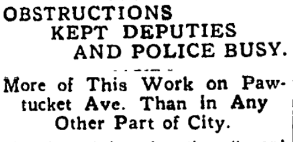 At 4 PM that day, someone driving a wagon the opposite direction of the streetcar threw a stone at the streetcar and hit one of the sheriffs in the eye.
General White, the sheriff of Providence County, sent a reply to the Pawtucket City Council regarding their June 7 request that deputies be withdrawn. White’s letter suggested that Mayor Fitzgerald was not doing his job:
“As long as the local authorities show a disposition and an ability to enforce the laws no action on my part is required. But when the Mayor of a city not only refuses to allow its police to enforce the laws, but orders the discharge of offenders after they have been arrested, the laws are not being enforced, and persons and property are not receiving the protection to which they are entitled.”
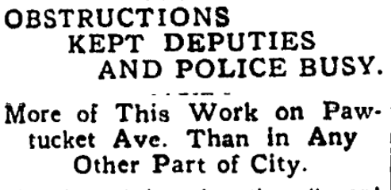 At 4 PM that day, someone driving a wagon the opposite direction of the streetcar threw a stone at the streetcar and hit one of the sheriffs in the eye.
General White, the sheriff of Providence County, sent a reply to the Pawtucket City Council regarding their June 7 request that deputies be withdrawn. White’s letter suggested that Mayor Fitzgerald was not doing his job:
“As long as the local authorities show a disposition and an ability to enforce the laws no action on my part is required. But when the Mayor of a city not only refuses to allow its police to enforce the laws, but orders the discharge of offenders after they have been arrested, the laws are not being enforced, and persons and property are not receiving the protection to which they are entitled.”
June 11, 1902
Violence in Pawtucket—crowds throwing stones at deputy sheriffs and sheriffs fire revolvers.
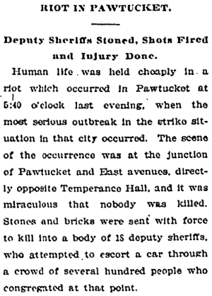
On June 11, there were multiple instances of violence throughout the city, primarily on the corner of East and Pawtucket Avenues, where crowds of people loitered and harassed cars, carmen and deputy sheriffs.
A large disturbance occurred late afternoon, when cars from Providence on the Pawtucket Ave line were bombarded with stones, eggs and potatoes. Two members of the Rhode Island Society for the Prevention of Cruelty to Animals were assaulted and chased by the mob and both received injuries. Both men of the Society were harassed, chased and assaulted. The deputy sheriffs began brandishing their revolvers, and the crowd, swelling to hundreds of people continued to throw objects. The deputies fired their revolvers into the air to disperse the crowd.
Governor Kimabll met with Marden Perry, a director of the Traction Company—Perry would meet with strikers, but refused to meet with union representatives. The Governor and Sheriff White held a meeting to discuss the deteriorating situation in Pawtucket. Union leaders responded to Perry in a letter trying to push for union representation in the meeting.
A large disturbance occurred late afternoon, when cars from Providence on the Pawtucket Ave line were bombarded with stones, eggs and potatoes. Two members of the Rhode Island Society for the Prevention of Cruelty to Animals were assaulted and chased by the mob and both received injuries. Both men of the Society were harassed, chased and assaulted. The deputy sheriffs began brandishing their revolvers, and the crowd, swelling to hundreds of people continued to throw objects. The deputies fired their revolvers into the air to disperse the crowd.
Governor Kimabll met with Marden Perry, a director of the Traction Company—Perry would meet with strikers, but refused to meet with union representatives. The Governor and Sheriff White held a meeting to discuss the deteriorating situation in Pawtucket. Union leaders responded to Perry in a letter trying to push for union representation in the meeting.
June 12, 1902
Governor orders the militia to Pawtucket—a young boy shot.
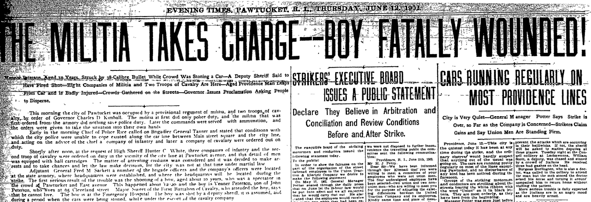
Overnight, the Governor ordered the state militia to Pawtucket to restore order. THroughout the morning of June 12, militiamen throughout the state arrived in various companies at the Rhode Island State Armory on Exchange Street.
Late in the morning, at the corners of East and Pawtucket Aves crowds continue to obstruct the railway with obstacles. At about 12:20 in the afternoon, the militia began to arrive in Pawtucket and head to the armory. As they arrived, Pawtucket residents gathered in large crowds to cheer them on. Not too long after, a streetcar came through in which the crowd attacked with stones and other objects. Deputy sheriffs shot their revolvers out the window and one of the bullets hit a boy in the crowd. Young Venner Peterson was brought to the hospital with a bullet wound through his throat and spine.
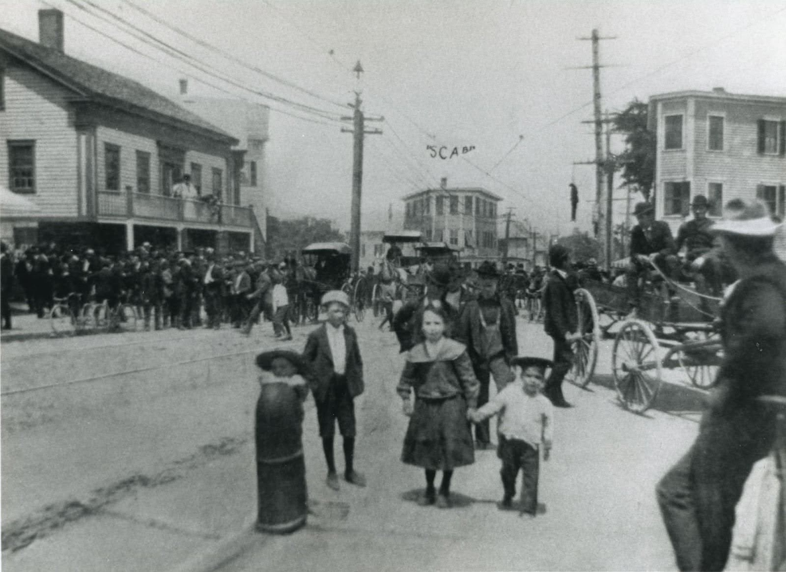
There were other incidents throughout the day—a passenger was hit in the head with a stone on Main St. in the South Woodlawn neighborhood. Later in the day, at Pawtucket and East Avenues, the throngs of strike sympathizers “in the vicinity of three saloons and a barber shop,” many of whom were drinking, were harassing the militiamen. The militiamen responded with some force by herding them to private property: “The barber shop was a haven for so many that some were clogged in the doorway.” After more militiamen arrived at the scene, they held a “bayonet charge” in which the herded the mob from the junction of East and Pawtucket Avenues.
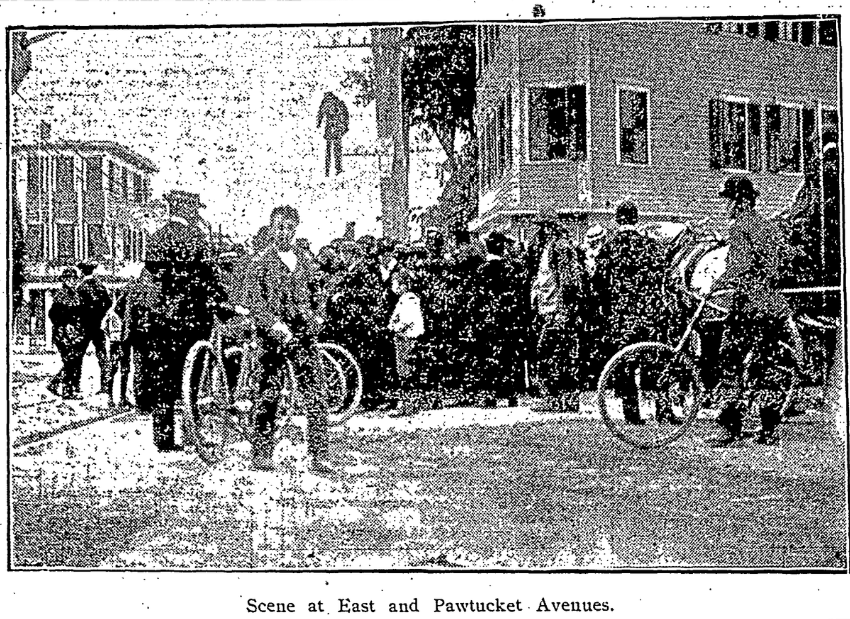 According to The Providence Journal, it seemed many of the militia sympathized with the strikers and their cause:
“With the city like an armed camp there was more disorder than ever before, gangs of ruffians paraded the streets and last night… it was impossible for a peaceful citizen to find transportation in a street car.” According to the editors of The Journal, “Enough has been demonstrated by happenings at the corner of Pawtucket and East avenues to show that the situation in Pawtucket fully justifies State intervention and that nothing short of the most vigorous exercise of military authority will restore that city to the condition of a law-abiding and peaceful community.”
Mayor Fitzgerald returned promptly in the middle of his honeymoon to address the deteriorating situation in Pawtucket. He talked with the Governor, arguing that the militia should be removed.
Late in the morning, at the corners of East and Pawtucket Aves crowds continue to obstruct the railway with obstacles. At about 12:20 in the afternoon, the militia began to arrive in Pawtucket and head to the armory. As they arrived, Pawtucket residents gathered in large crowds to cheer them on. Not too long after, a streetcar came through in which the crowd attacked with stones and other objects. Deputy sheriffs shot their revolvers out the window and one of the bullets hit a boy in the crowd. Young Venner Peterson was brought to the hospital with a bullet wound through his throat and spine.
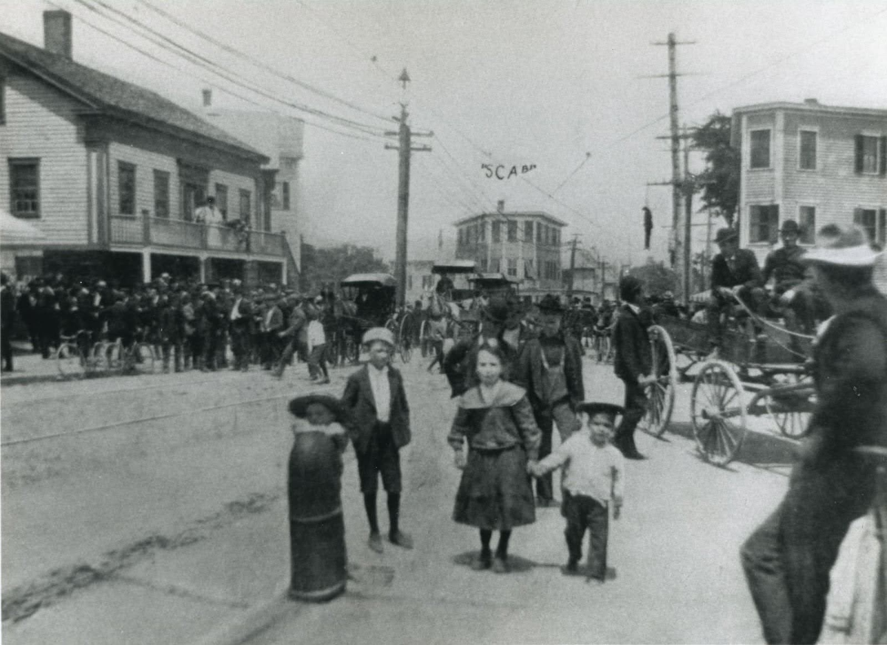
There were other incidents throughout the day—a passenger was hit in the head with a stone on Main St. in the South Woodlawn neighborhood. Later in the day, at Pawtucket and East Avenues, the throngs of strike sympathizers “in the vicinity of three saloons and a barber shop,” many of whom were drinking, were harassing the militiamen. The militiamen responded with some force by herding them to private property: “The barber shop was a haven for so many that some were clogged in the doorway.” After more militiamen arrived at the scene, they held a “bayonet charge” in which the herded the mob from the junction of East and Pawtucket Avenues.
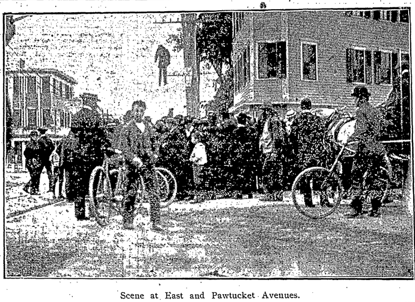 According to The Providence Journal, it seemed many of the militia sympathized with the strikers and their cause:
“With the city like an armed camp there was more disorder than ever before, gangs of ruffians paraded the streets and last night… it was impossible for a peaceful citizen to find transportation in a street car.” According to the editors of The Journal, “Enough has been demonstrated by happenings at the corner of Pawtucket and East avenues to show that the situation in Pawtucket fully justifies State intervention and that nothing short of the most vigorous exercise of military authority will restore that city to the condition of a law-abiding and peaceful community.”
Mayor Fitzgerald returned promptly in the middle of his honeymoon to address the deteriorating situation in Pawtucket. He talked with the Governor, arguing that the militia should be removed.
June 13, 1902
Conference held between Mayor, Governor, Sheriff and Militia on how to proceed further—deputy sheriffs withdrawn from streetcars.
Militia escorted the first car from the car barn from North Main St. in Providence at 9:20: “All branches of the State militia were represented and in the centre of the procession was a Union Railroad car, which went through to the East avenue terminus.” Along the route, the soldiers warned citizens to “keep in their houses and move away from the street corners.” Cavalry, infantry, Naval Reserves soldiers from Newport and the “rumbling gun carriages of the Machine Gun Battery” escorted the car from Providence, down Pawtucket avenue, through the junction as East Ave to its line terminus and back.
Throughout the day, the bold presence of the militia were able to disperse gathering crowds wherever they threatened to form. Many strike sympathizers attempted to challenge their authority, and six were arrested throughout the day.
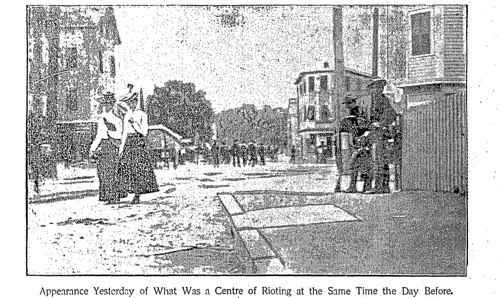 Around noon, Mayor Fitzgerald met with Sheriff White, and Gen Tanner, and chief of Pawtucket Police Rice. During the meeting, the Mayor stressed the importance of withdrawing the deputy sheriffs and the militia as soon as possible. He asserted that Pawtucket law enforcement would successfully keep order. The mayor also ordered that all saloons be closed at 5 PM.
Late afternoon, the mayor issued a proclamation printed in The Evening Times. Fitzgerald argued that state law enforcement instigated the strike sympathizers in Pawtucket:
“The unusual excitement and any outbreaks that have occurred have been due wholly, in my opinion, to the ill-considered action of placing sheriffs who were not under the control of the officials of this city and apparently in the employ of the railroad company in such a position that they were intruders in the community and a taunt to the city. I have always believed and I do now believe that this is a law abiding community and that if we are allowed to manage our own affairs in the way we consider the best that law and order will be maintained at as high a standard as anywhere in the state. But if interfered with by those who are unused to police duty and who in many cases are such a character as to need police supervision we are rendered powerless and hampered to such an errant that our efforts are vain. Feeling that Pawtucket could take care of itself without the aid of deputy sheriffs, the City Council of this city request the removal of them. The trouble that we have had followed, culminating in the ordering of the militia to this city.”
He continued by admonishing any violent acts of strike sympathizers, repeating the notion that violence and disorder would only hurt the strikers and their cause. Fitzgerald intended “to prove positively that the police force of Pawtucket can maintain order.” He ended his proclamation by warning that if disorder continued “we must profess inability to control our own affairs, and submit to military domination.”
Although Fitzgerald attributed the lawlessness to instigation by unprofessional deputy sheriffs, he seemed to downplay the consistent antagonism of and acts of violence perpetrated by the citizenry. He was a politician who supported labor reforms in a city which was overwhelmingly dominated by industrial wage laborers. If the mayor wanted to be successful politically, he would need to sympathize with the working class strike sympathizers of Pawtucket.
The Pawtucket Business Merchants Association requested that the Governor solicit the opinion of the Rhode Island Supreme Court Judges as to the constitutionality of the 10-hour law. Rendering an opinion from the court would give creedence to either the Traction Company or the strikers. 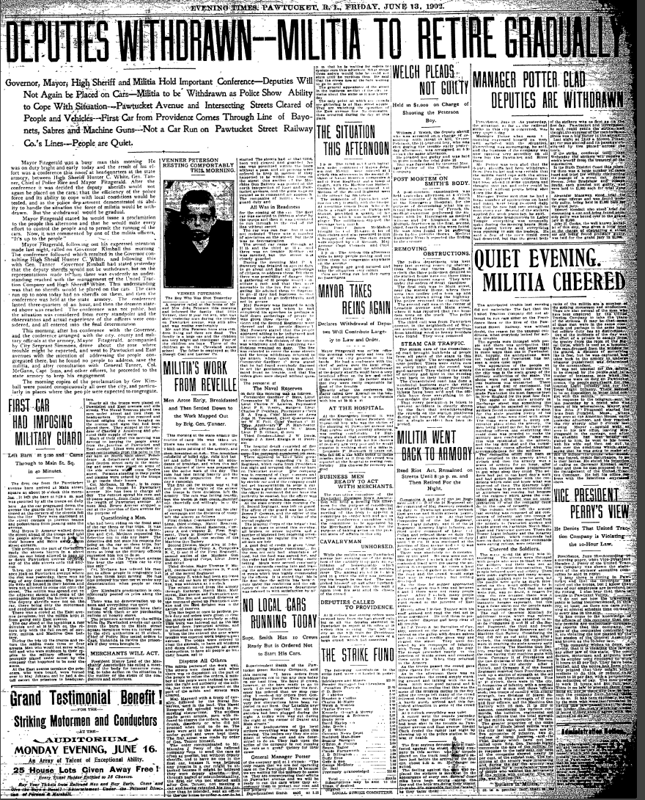
Throughout the day, the bold presence of the militia were able to disperse gathering crowds wherever they threatened to form. Many strike sympathizers attempted to challenge their authority, and six were arrested throughout the day.
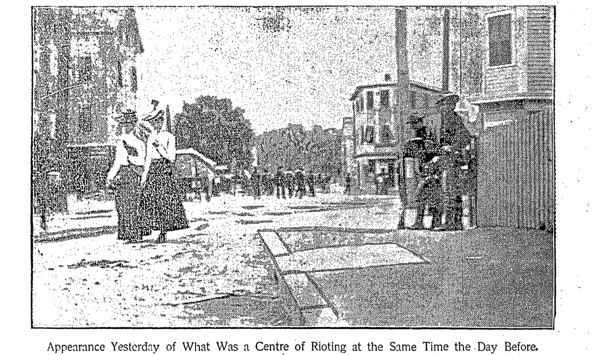 Around noon, Mayor Fitzgerald met with Sheriff White, and Gen Tanner, and chief of Pawtucket Police Rice. During the meeting, the Mayor stressed the importance of withdrawing the deputy sheriffs and the militia as soon as possible. He asserted that Pawtucket law enforcement would successfully keep order. The mayor also ordered that all saloons be closed at 5 PM.
Late afternoon, the mayor issued a proclamation printed in The Evening Times. Fitzgerald argued that state law enforcement instigated the strike sympathizers in Pawtucket:
“The unusual excitement and any outbreaks that have occurred have been due wholly, in my opinion, to the ill-considered action of placing sheriffs who were not under the control of the officials of this city and apparently in the employ of the railroad company in such a position that they were intruders in the community and a taunt to the city. I have always believed and I do now believe that this is a law abiding community and that if we are allowed to manage our own affairs in the way we consider the best that law and order will be maintained at as high a standard as anywhere in the state. But if interfered with by those who are unused to police duty and who in many cases are such a character as to need police supervision we are rendered powerless and hampered to such an errant that our efforts are vain. Feeling that Pawtucket could take care of itself without the aid of deputy sheriffs, the City Council of this city request the removal of them. The trouble that we have had followed, culminating in the ordering of the militia to this city.”
He continued by admonishing any violent acts of strike sympathizers, repeating the notion that violence and disorder would only hurt the strikers and their cause. Fitzgerald intended “to prove positively that the police force of Pawtucket can maintain order.” He ended his proclamation by warning that if disorder continued “we must profess inability to control our own affairs, and submit to military domination.”
Although Fitzgerald attributed the lawlessness to instigation by unprofessional deputy sheriffs, he seemed to downplay the consistent antagonism of and acts of violence perpetrated by the citizenry. He was a politician who supported labor reforms in a city which was overwhelmingly dominated by industrial wage laborers. If the mayor wanted to be successful politically, he would need to sympathize with the working class strike sympathizers of Pawtucket.
The Pawtucket Business Merchants Association requested that the Governor solicit the opinion of the Rhode Island Supreme Court Judges as to the constitutionality of the 10-hour law. Rendering an opinion from the court would give creedence to either the Traction Company or the strikers. 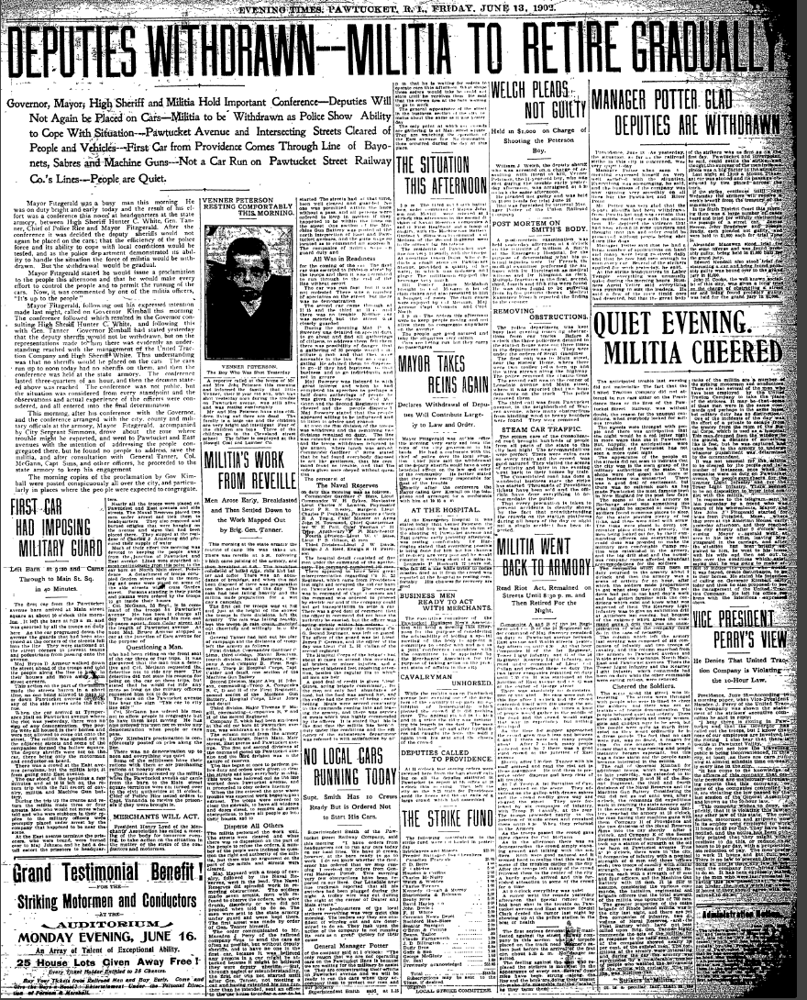
June 14, 1902
Mayor Fitzgerald takes over with city police—less disorder throughout Pawtucket.
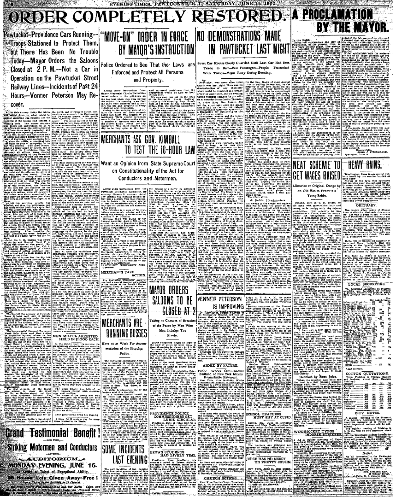
Mayor Fitzgerald continued a “move-on” policy from the previous day in which people throughout Pawtucket were not allowed to gather in crowds, but had to continue movement throughout the city. The police and militia were stationed throughout the city. The streetcar lines throughout the city began to run more frequently and without disturbance. Mayor Fitzgerald ordered all saloons closed at 2PM. Throughout the city, multiple effigies were removed from both Central Ave and Mineral Spring Ave.
There were some confrontations in the afternoon, but notably much less violent than previously. Commander Sims of the militia ordered the sign hanging on Main St. Square removed. On East Ave near Pidge St, a house was brandishing a red flag, which was correlated with radicalist leaning The Journal opined that “The display of this small flag of Anarchist hue and significance was in itself a trifling incident, but was important as indicating the presence of a factor in the disturbing element generally cropping out at such times, and far more undesirable than the conscientious sympathizers with the striking car men.”
The Main Street line, which had been discontinued due to disorder, was re-established in the afternoon—this being the busiest artery of traffic spanning between Providence and Pawtucket.
There were some confrontations in the afternoon, but notably much less violent than previously. Commander Sims of the militia ordered the sign hanging on Main St. Square removed. On East Ave near Pidge St, a house was brandishing a red flag, which was correlated with radicalist leaning The Journal opined that “The display of this small flag of Anarchist hue and significance was in itself a trifling incident, but was important as indicating the presence of a factor in the disturbing element generally cropping out at such times, and far more undesirable than the conscientious sympathizers with the striking car men.”
The Main Street line, which had been discontinued due to disorder, was re-established in the afternoon—this being the busiest artery of traffic spanning between Providence and Pawtucket.
June 15, 1902
Many streetcars attacked along the local lines in Pawtucket.
The main thoroughfares ran smoothly throughout Pawtucket. Along the more local routes, such as Mineral Spring line, North Main St. (current day Roosevelt), Prospect St., people threw stones to damage the streetcars. Overall, more cars were running than since the strike began.
Central Falls had become incorporated as a city seven years prior in 1895—it too hosted a variety of mills and laborers. The streetcar lines along Broad, Dexter, and Lonsdale ventured across the Pawtucket line into Central Falls. Residents of Central Falls supported the strike and held similar negative views of the United Traction Company. Similarly to Pawtucket, the labor community of Central Falls attacked many of the cars and obstructed the lines. The militia only had orders within the jurisdiction of Pawtucket, but ventured to the border between Pawtucket and Central Falls, crossing it at times. People continued to throw stones at cars wherever the militia was not present, causing much disorder in Central Falls throughout the afternoon.
Central Falls had become incorporated as a city seven years prior in 1895—it too hosted a variety of mills and laborers. The streetcar lines along Broad, Dexter, and Lonsdale ventured across the Pawtucket line into Central Falls. Residents of Central Falls supported the strike and held similar negative views of the United Traction Company. Similarly to Pawtucket, the labor community of Central Falls attacked many of the cars and obstructed the lines. The militia only had orders within the jurisdiction of Pawtucket, but ventured to the border between Pawtucket and Central Falls, crossing it at times. People continued to throw stones at cars wherever the militia was not present, causing much disorder in Central Falls throughout the afternoon.
June 16, 1902
Continued violence in Pawtucket—overall, cars ran freely. Conference held to determine whether to withdraw militia.
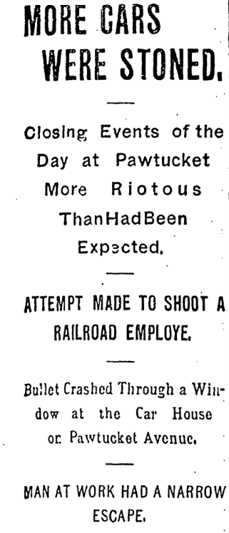
More cars ran in the city, but residents continued to throw stones at many. There was a violent incident at the car house on Pawtucket Avenue, technically in Providence over the boundary. Someone shot at a worker within the car house. The assailant missed their target. The event illustrated the continued heightened tensions within the city.
The Pawtucket Business Men’s Association helped a meeting with the Governor, Mayor, and militia officers to discuss options for withdrawing the militia. In this conversation, we can see the various perspectives of community members law enforcement officials and politicians.
The Providence Journal reported excerpts of the meeting in their June 17 issue. Governor Kimball advised that Mayor Fitzgerald “issue a manifesto requesting the people to help to preserve order as much as possible.” The Mayor disagreed, arguing that it would be futile: "lawbreakers will not listen to reason in times of this kind.” Fitzgerald again blamed the influx of deputy sheriffs ordered by Sheriff White as the root of the disorder. He also believed the ordering of the militia was unlawful “in my opinion, there was not sufficient cause for such action.” Kimball asked the mayor if the police force could handle the situation if the militia were withdrawn. The mayor’s response shows that he was impatient: “they must go some time, and until they leave there is no wat in which we can demonstrate that the situation will be satisfactorily handled.”
Pawtucket community leaders tended to want to secure law and order as soon as possible. The Governor recommended that the business leaders for an advisory committee to establish whether or not it was safe to withdraw the militia. The association voted to form this committee to advise the Governor.
The Pawtucket Business Men’s Association helped a meeting with the Governor, Mayor, and militia officers to discuss options for withdrawing the militia. In this conversation, we can see the various perspectives of community members law enforcement officials and politicians.
The Providence Journal reported excerpts of the meeting in their June 17 issue. Governor Kimball advised that Mayor Fitzgerald “issue a manifesto requesting the people to help to preserve order as much as possible.” The Mayor disagreed, arguing that it would be futile: "lawbreakers will not listen to reason in times of this kind.” Fitzgerald again blamed the influx of deputy sheriffs ordered by Sheriff White as the root of the disorder. He also believed the ordering of the militia was unlawful “in my opinion, there was not sufficient cause for such action.” Kimball asked the mayor if the police force could handle the situation if the militia were withdrawn. The mayor’s response shows that he was impatient: “they must go some time, and until they leave there is no wat in which we can demonstrate that the situation will be satisfactorily handled.”
Pawtucket community leaders tended to want to secure law and order as soon as possible. The Governor recommended that the business leaders for an advisory committee to establish whether or not it was safe to withdraw the militia. The association voted to form this committee to advise the Governor.
June 17, 1902
The mayor refuses to join Merchants’ Committee—more cars run on the Pawtucket lines.
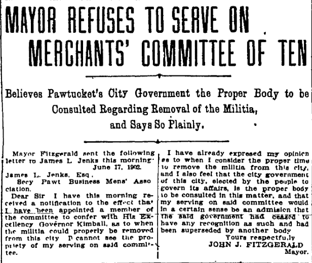
In a reply to the Pawtucket Business Men' s Association, Mayor Fitzgerald refused to serve on the committee recommended by Governor Kimball. The Governor’s suggestion gave power to the patrician businessmen of Pawtucket equality with the civil authority in the mayor. Fitzgerald believed this to be an overreach; the mayor was the elected representative of the people and “the city government of this city, elected by the people to govern its affairs, is the proper body to be consulted in this matter.”
The state militia continued to decrease their forces throughout the city.
Cars continued to be stoned in Central Falls on Dexter and Lonsdale as well as in Pawtucket at the corner of Mineral Spring Ave and Smithfield Ave. Overall, more cars ran throughout the day, reaching 13 out of the full 18 prior to the strike. Still no cars ran throughout the evening.
The state militia continued to decrease their forces throughout the city.
Cars continued to be stoned in Central Falls on Dexter and Lonsdale as well as in Pawtucket at the corner of Mineral Spring Ave and Smithfield Ave. Overall, more cars ran throughout the day, reaching 13 out of the full 18 prior to the strike. Still no cars ran throughout the evening.
June 18, 1902
Disorder in Central Falls—more cars running in Pawtucket.
On Dexter St. in Central Falls more than 500 people attacked the motorman and conductor by pelting stones. The motorman ducked for cover and let the trolley run unattended for some distance. There were more stone throwing in the “Frenchtown,” or Valley Falls section of Central Falls.
A large stockholder in the Woonsocket Street Railway Company brought a challenge to the 10-hour law in Federal Court.
A large stockholder in the Woonsocket Street Railway Company brought a challenge to the 10-hour law in Federal Court.
June 19, 1902
Conductor attacked by four men late at night. Boycott continues in Pawtucket.
Throughout the day, there were some minor attempts to stop some of the Pawtucket streetcars on Prospect street, where the conductor was chased from his streetcar. Other incidents of obstructions and stone throwing occurred at the corner of Mineral Spring Ave and Lonsdale and the corner of Central Ave and York Ave.
Strike sympathizers continued to boycott the streetcars in Pawtucket; “it was a rare thing to see even a single passenger….” Supporters distributed “we walk” ribbons throughout the city which strike supporters wore in numbers.
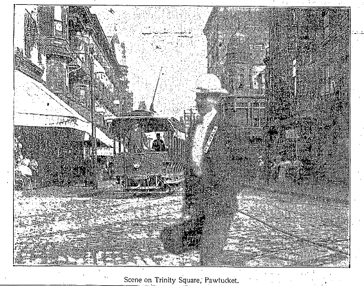 A man from Worcester who came to Pawtucket to work on the lines as a strikebreaker was assaulted on Cottage Street a short time after 10 PM. Four men “hurled him to the ground, and proceeded to kick him in the head for a period of a full minute” When brought to the armory, his head was “in a shockingly battered and laserated condition. The whole top of his head was torn and bruised. Four wounds in the scalp were bleeding profusely.”
After being ordered to remove it the week before by an officer from the Naval Reserves, strikers rehung a sign across Main St. which read “The electric railway strike is still on. Friends of the men will not patronize the cars.”
Strike sympathizers continued to boycott the streetcars in Pawtucket; “it was a rare thing to see even a single passenger….” Supporters distributed “we walk” ribbons throughout the city which strike supporters wore in numbers.
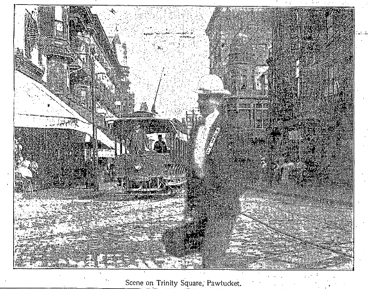 A man from Worcester who came to Pawtucket to work on the lines as a strikebreaker was assaulted on Cottage Street a short time after 10 PM. Four men “hurled him to the ground, and proceeded to kick him in the head for a period of a full minute” When brought to the armory, his head was “in a shockingly battered and laserated condition. The whole top of his head was torn and bruised. Four wounds in the scalp were bleeding profusely.”
After being ordered to remove it the week before by an officer from the Naval Reserves, strikers rehung a sign across Main St. which read “The electric railway strike is still on. Friends of the men will not patronize the cars.”
June 20, 1902
All cars running. More harassment by strike supporters.
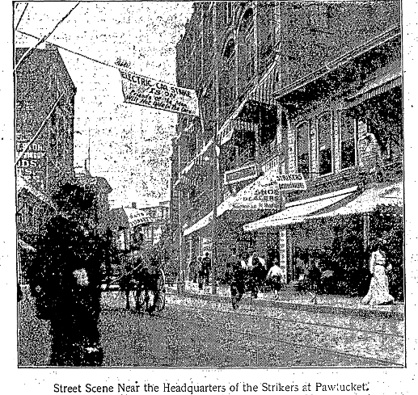
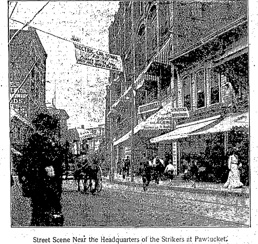
All 18 cars on local lines ran during the day.
In the morning, a motorman on Main St., was attacked by two men who jumped on the moving car and attempted to physically assault the worker. They jumped back off and ran away as police began to chase them. By the afternoon, the police had arrested both men who hailed from Brooklyn. The local public was leary of alleged outside agitators. Those critical of the strike could use these incidents as propaganda against the strikers.
In the evening, the superintendent attempted to continue to run the streetcar lines. The inter-city line spanning from Pawtucket, Central Falls, Cumberland and Lincoln was attacked by a large group of people with obstructions on the line and stoning the vehicle. The Providence Journal noted that women “filled their aprons with rocks and so kept the car men’s assailants supplied with ammunition.”
In the morning, a motorman on Main St., was attacked by two men who jumped on the moving car and attempted to physically assault the worker. They jumped back off and ran away as police began to chase them. By the afternoon, the police had arrested both men who hailed from Brooklyn. The local public was leary of alleged outside agitators. Those critical of the strike could use these incidents as propaganda against the strikers.
In the evening, the superintendent attempted to continue to run the streetcar lines. The inter-city line spanning from Pawtucket, Central Falls, Cumberland and Lincoln was attacked by a large group of people with obstructions on the line and stoning the vehicle. The Providence Journal noted that women “filled their aprons with rocks and so kept the car men’s assailants supplied with ammunition.”
June 21, 1902
More troops withdrawn, cars ran with little incident.
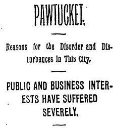
The Providence Journal elaborates on why Pawtucket has suffered the past few weeks.
More troops from the militia are withdrawn as the all streetcar lines were p and running, although evening runs past 6PM continue to not run due to recent violence at Lonsdale in Cumberland.
Pawtucket held an annual Fourth of July celebration in which there were public celebrations. The committee for the celebration met on June 21, and decided that they would not hold the annual celebration due to the current strike.
More troops from the militia are withdrawn as the all streetcar lines were p and running, although evening runs past 6PM continue to not run due to recent violence at Lonsdale in Cumberland.
Pawtucket held an annual Fourth of July celebration in which there were public celebrations. The committee for the celebration met on June 21, and decided that they would not hold the annual celebration due to the current strike.
June 23, 1902
Shots fired toward a streetcar on East Avenue—cars continue to be stones throughout Pawtucket.
A car on the East Ave line coming from Providence was fired upon by an individual from the bushes. No one was hurt.
Throughout all of the local lines, cars continued to be stoned by Pawtucket residents. “There were stoning incidents on every one of the five local lines during the evening, and the running of the cars was limited to the territory within the boundaries of the city of Pawtucket.”
A conference was held between local mayors and United Traction Company representatives. The company’s Vice President, Marsden Perry, refused to hear any of the demands of the union, reiterating that men will be rehired as long as they are not part of a union.
In the evening, Pawtucket held a large concert including the Governor in attendance at the Music Hall in celebration of St. John’s Day, which would occur the following day. The Franco-American population throughout the state observed the holiday as an expression of their cultural and religious heritage.
Throughout all of the local lines, cars continued to be stoned by Pawtucket residents. “There were stoning incidents on every one of the five local lines during the evening, and the running of the cars was limited to the territory within the boundaries of the city of Pawtucket.”
A conference was held between local mayors and United Traction Company representatives. The company’s Vice President, Marsden Perry, refused to hear any of the demands of the union, reiterating that men will be rehired as long as they are not part of a union.
In the evening, Pawtucket held a large concert including the Governor in attendance at the Music Hall in celebration of St. John’s Day, which would occur the following day. The Franco-American population throughout the state observed the holiday as an expression of their cultural and religious heritage.
June 24, 1902
St John’s Day celebrated in Pawtucket and Central Falls—The Rhode Island Company officially takes over management of the United Traction Company, including the Pawtucket Street Railway Company.
On June 24, the United Traction Company was taken over by a Philadelphia corporation, the United Gas Improvement Company of Philadelphia. The syndicate formed the Rhode Island Company to take control of the United Traction and Electric Company—the holding company for most of Rhode Island streetcar lines. The impact of this merger was that the larger corporate entity would be able to subsume more risk in the hope of raising profit in the long-term, thereby gaining an investment. Historically, what happened with Rhode Island transportation was part of a larger trend in which larger trusts formed throughout the years of 1897-1903. See NARRATIVE for more context.
More statements from the strikers and the national union treasurer Orr—they place blame with the United Traction Company and their intransigence—linking their oppression with the growth of large corporate trusts.
Residents of Pawtucket and Central Falls celebrated St. John’s Day. The holiday was celebrated by many of Rhode Island’s Franco-American population, and thereby was an extension of Franco-American culture and identity. The streetcar lines were suspended throughout the afternoon as a parade and various celebrations were held in the streets by the public.
When the lines continued In the evening, more cars were stoned throughout Pawtucket.
More statements from the strikers and the national union treasurer Orr—they place blame with the United Traction Company and their intransigence—linking their oppression with the growth of large corporate trusts.
Residents of Pawtucket and Central Falls celebrated St. John’s Day. The holiday was celebrated by many of Rhode Island’s Franco-American population, and thereby was an extension of Franco-American culture and identity. The streetcar lines were suspended throughout the afternoon as a parade and various celebrations were held in the streets by the public.
When the lines continued In the evening, more cars were stoned throughout Pawtucket.
June 25, 1902
Militia begins to fully withdraw—Supreme Court opinion upholds Constitutionality of 10-hour law.
The militia received an order to withdraw from the city of Pawtucket. Pawtucket police officially take over all law enforcement within the city. Mayor Fitzgerald appoints special policemen to help enforce the law. The Providence Journal reported that three of the special policemen were strikers, insinuating bias on behalf of the mayor. There were a few more incidents of stoning of cars.
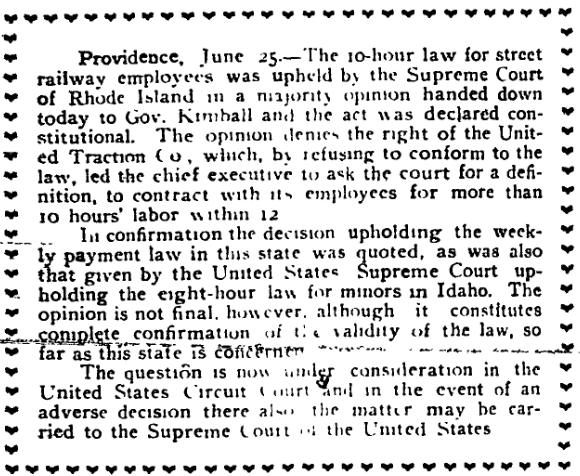
June 27, 1902
More violence in Pawtucket—motormen fired revolvers to scare away a large mob.
At various places throughout the city, cars and motormen were attacked and passengers were injured as well. On Central Avenue in Pawtucket, a large obstruction was on the route, and a group of about 500 people came upon the stopped vehicle. The carmen felt threatened—they brandished their revolvers and shot them in the air. Both men were arrested for carrying a concealed firearm. On Mineral Spring Avenue a woman was pelted with a stone and received a large gash on her face. Another motorman on Pawtucket was hit with a large stone on his back.
Judge Blodgett of the Rhode Island Supreme Court released a dissenting opinion on the constitutionality of the law, arguing that it interfered with employee-employer right to enter into a contract. He believed the 10-hour law was unconstitutional.
Judge Blodgett of the Rhode Island Supreme Court released a dissenting opinion on the constitutionality of the law, arguing that it interfered with employee-employer right to enter into a contract. He believed the 10-hour law was unconstitutional.
June 28, 1902
Federal Court judge denied injunction against prosecution of 10-hour law.
The judge decided that the court had no jurisdiction over the alleged unconstitutionality of the law. Referred to the Rhode Island Supreme Court opinion—Rhode Island Attorney General stated no cases would be brought until the autumn.
June 30, 1902
Mayor Fitzgerald addresses the police department.
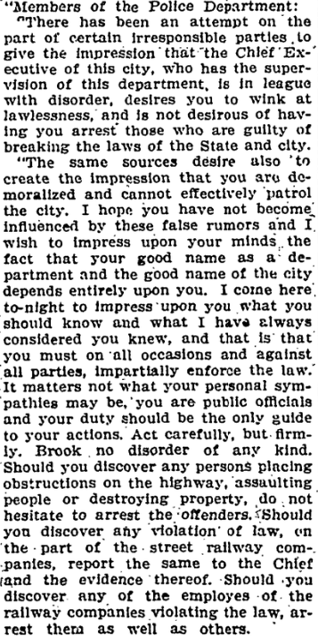
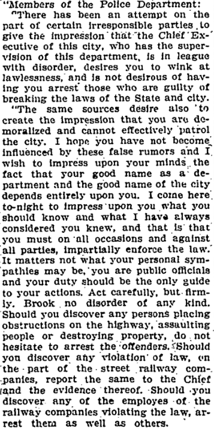
The Providence Journal had throughout the strike consistently insinuated that Mayor Fitzgerald was promoting disorder through his oversight of the police department. His address to the department was meant to quell that notion.
There was a little more disorder throughout Pawtucket—more stoning of cars and intimidation of streetcar workers.
There was a little more disorder throughout Pawtucket—more stoning of cars and intimidation of streetcar workers.
July 2, 1902
3 men arrested in Pawtucket.
Throughout the day police officers and special police hired by the street railway company, arrested three men for obstructing lines and harassing motormen.
July 6, 1902
Strike officially ends on July 6, 1902—Pawtucket strikers vote to continue.
On July 5, a meeting was held between union leaders and Traction Company management. Many strikers had been grumbling about returning to work, since many were not receiving strike benefits. The reason for this was that the strikers did not solicit permission from the national union, and therefore were not granted adequate funding for striking without receiving permission.
The business agent of the union commented that although the strike was officially off, “they [Pawtucket strikers] have the privilege of cutting loose if they wish to and to continue the strike. But they’re not on strike as an organization and will not be unless they apply for a separate charter.” After stating the facts for the public, he commended the Pawtucket strikers for their solidarity. “Those men were the strongest all through the strike. They had no desertions and felt that they didn’t care to back behind the strike breakers.”
Strikers in Pawtucket raised a new banner near the Main Street headquarters “The Electric Car Strike is Still on. Please Keep off the Cars.”
The business agent of the union commented that although the strike was officially off, “they [Pawtucket strikers] have the privilege of cutting loose if they wish to and to continue the strike. But they’re not on strike as an organization and will not be unless they apply for a separate charter.” After stating the facts for the public, he commended the Pawtucket strikers for their solidarity. “Those men were the strongest all through the strike. They had no desertions and felt that they didn’t care to back behind the strike breakers.”
Strikers in Pawtucket raised a new banner near the Main Street headquarters “The Electric Car Strike is Still on. Please Keep off the Cars.”
July 8, 1902
Pawtucket strikers vote to end the strike.
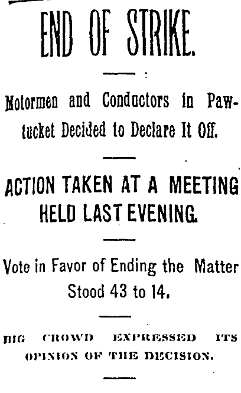
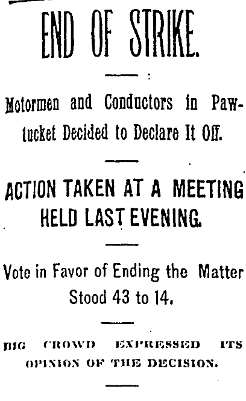
Pawtucket strikers continued to face apathy among their supporters. The Providence strikers had recently ended their strike three days prior. Pawtucket businesses and merchants, who had supported the strike, continued to grumble about the continuous donations and loss of business among themselves.
After a vote of 43-14 in favor of ending the strike, Benjamin Smith, the Secretary of the strikers in Pawtucket, announced its terminus:
“I desire on behalf of the strikers, to announce to you the result of our action this evening. I assure you that it is not a pleasing task to be obliged to surrender at this time, but, in view of the action taken by the men in Providence and the anxiety on the part of the business interests of the city of Pawtucket who have stood by us in this struggle for our rights, we have decided that it is useless to continue the struggle.”
Editorialization from The Providence Journal evaluated the cause and effect of the strike. They commented on the specific situation in Pawtucket as “vicious and even murderous attacks were made upon the men who were employed to take the places of the strikers on the cars.” The need for sheriffs was due to Mayor Fitzgerald denying “such protection by the local police department.” The militia was sent in, and “the prompt and energetic action of Gov. Kimball in grappling with the situation… had an immediate and salutary effect.” As a result of the long-lasting strike and political violence, Pawtucket suffered in reputation as a safe, functioning city. “The injury to the retail business interests of the city caused by the strike can hardly be estimated, and the damage to the fair fame of the city it will require years to repair.”
After a vote of 43-14 in favor of ending the strike, Benjamin Smith, the Secretary of the strikers in Pawtucket, announced its terminus:
“I desire on behalf of the strikers, to announce to you the result of our action this evening. I assure you that it is not a pleasing task to be obliged to surrender at this time, but, in view of the action taken by the men in Providence and the anxiety on the part of the business interests of the city of Pawtucket who have stood by us in this struggle for our rights, we have decided that it is useless to continue the struggle.”
Editorialization from The Providence Journal evaluated the cause and effect of the strike. They commented on the specific situation in Pawtucket as “vicious and even murderous attacks were made upon the men who were employed to take the places of the strikers on the cars.” The need for sheriffs was due to Mayor Fitzgerald denying “such protection by the local police department.” The militia was sent in, and “the prompt and energetic action of Gov. Kimball in grappling with the situation… had an immediate and salutary effect.” As a result of the long-lasting strike and political violence, Pawtucket suffered in reputation as a safe, functioning city. “The injury to the retail business interests of the city caused by the strike can hardly be estimated, and the damage to the fair fame of the city it will require years to repair.”